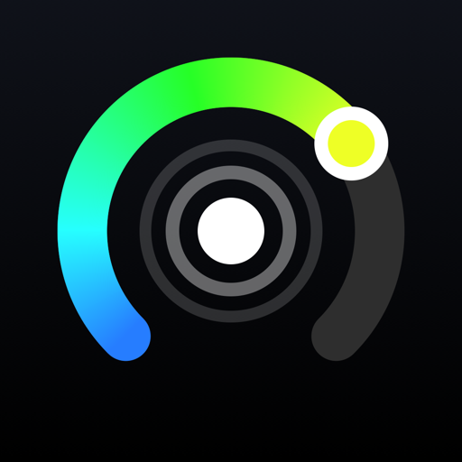
Wrist Metronome
Feel the beat on your wrist
A metronome you feel as well as hear. Keep time with gentle haptic taps on Apple Watch, or a clear click on Apple Watch, iPhone and iPad. Simple enough for daily practice, steady enough for the stage.
For Apple Watch, iPhone and iPad
Apple Watch
Feel every beat without looking, without earbuds, and without a sound reaching the microphones.
- Haptic taps, accented downbeat. The first beat of each bar is stronger. Choose Light, Standard or Strong taps.
- Or hear the click through Bluetooth headphones, or the watch speaker on models that support it.
- Digital Crown tempo from 30 to 240 BPM, even while it plays, with the tempo marking curved along the dial.
- Tap left or right on the face to step to the previous or next preset.
- Time signatures. Tap the numerals to pick 1 to 12 beats over a quarter or eighth note.
- Keeps going with your wrist down, for sessions of up to an hour.
- Graphite or Black face, with an optional beat wave beside the clock, and complications that open the app in one tap.
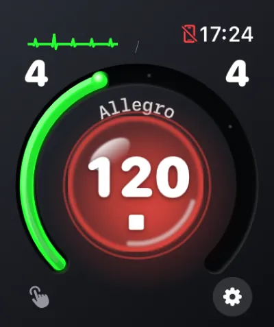
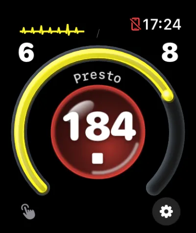
iPhone and iPad
A liquid-smooth tempo dial, and your watch and phone working as one.
- Tempo dial, presets and + / −. Change the tempo live while it plays.
- Time signatures from 2/4 to 12/8, or any number of beats from 1 to 12.
- Sound, Vibrate or both on iPhone. Sound keeps playing with the screen locked.
- In sync with Apple Watch. While the watch plays, iPhone shows the tempo and the beat and can stop it or change the tempo.
- Live Activity and widgets. See the tempo on the Lock Screen and in the Dynamic Island, with Stop and + / −. Play or stop from a Home Screen widget.
- Practice profiles for every piece, also available on the watch.
- iPad with a profiles sidebar, Split View and every orientation, in light or dark mode.
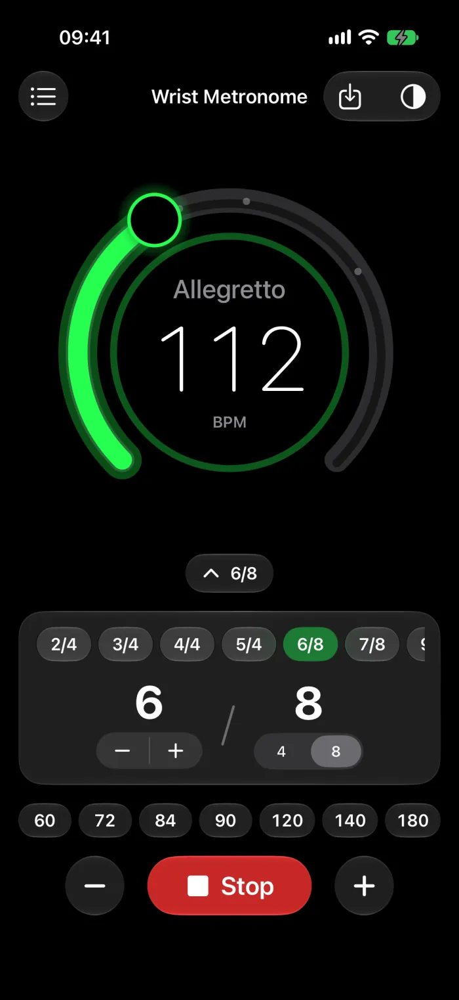
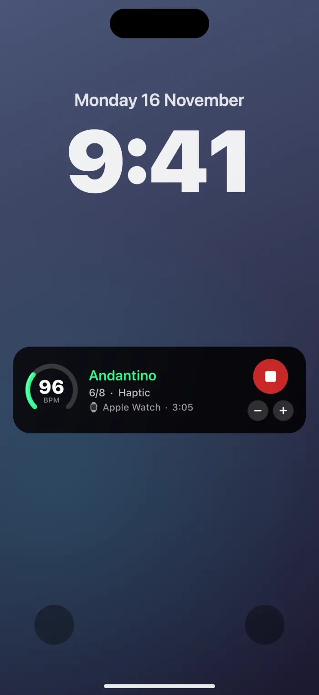
Stand view
Stand your iPad or iPhone Duo up and watch the beat, like a clock on the music stand.
- iPad: tap Stage View in the toolbar for a full-screen dial on the music stand.
- iPhone Duo: half open it like a laptop or a book and the dial stands on one half, with the controls on the other. Closed, tap Stand View on the front screen.
- A beat ball that orbits the dial or swings through it like liquid, landing exactly on the beats. Or turn it off.
- Out of the way. While it plays, the controls drift away and the dial grows. Tap anywhere to bring them back.
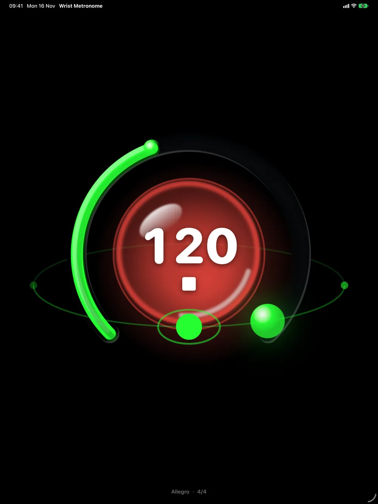

For everyone
From the first scales to the stage, for any instrument and any body of work.
Pianists and classical players
Largo to Prestissimo, with tempo markings shown as you change speed, and compound time like 6/8 and 12/8.
Guitarists and bassists
Lock in your strumming and picking, and save a profile for every song.
Drummers
Feel the click on your wrist without it bleeding into the mics.
Dancers and fitness
Count beats and reps without a sound.
Accessible
VoiceOver and large text throughout, and Reduce Motion is respected.
Private
No accounts, no ads, no tracking. No data is collected. Privacy Policy
Screenshots
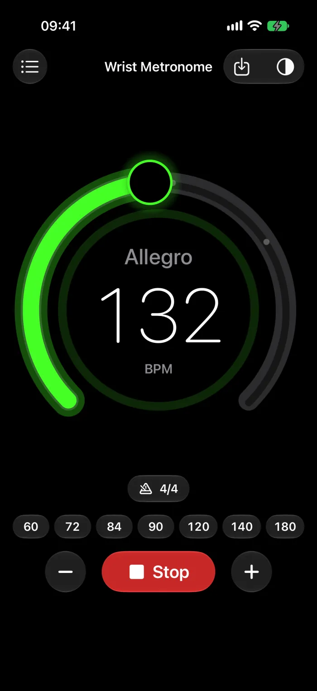
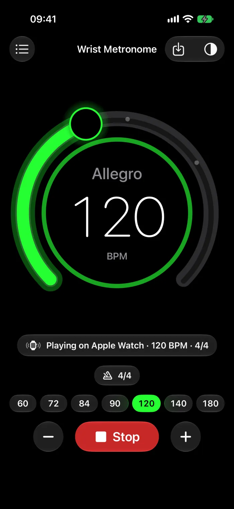
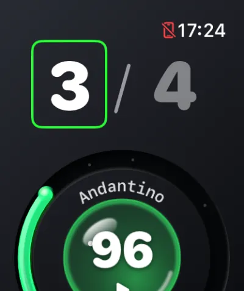
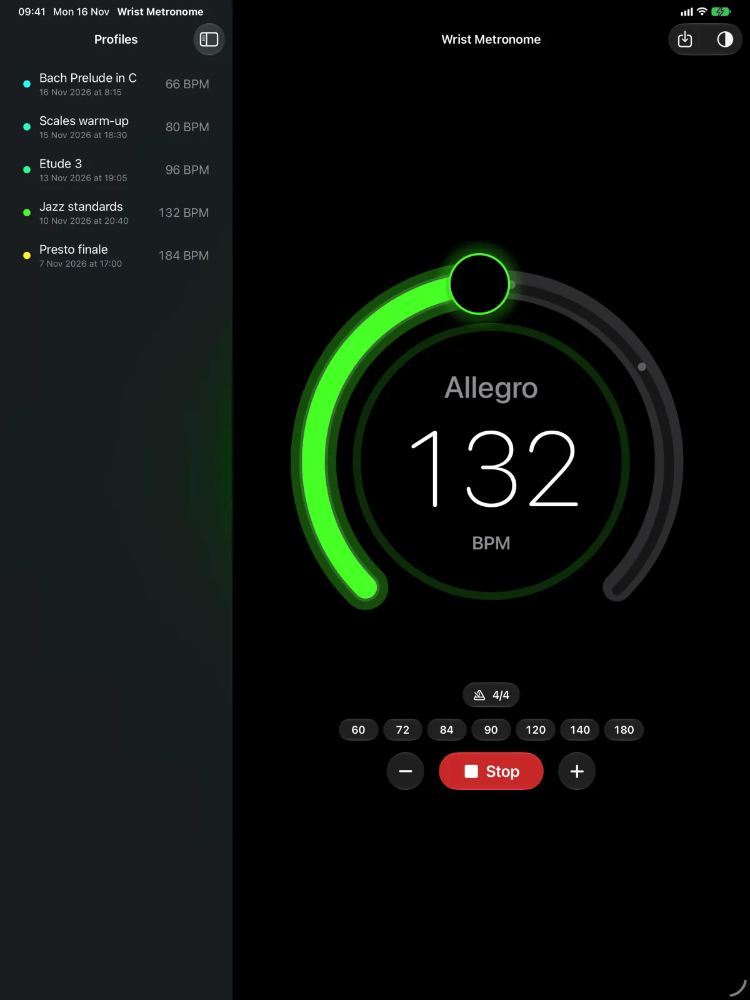
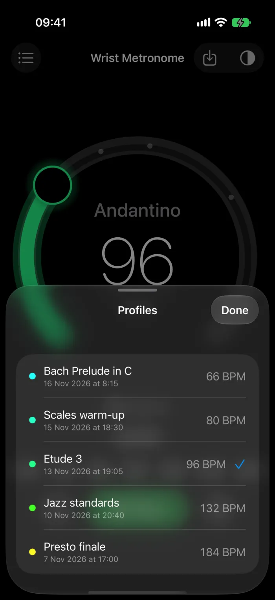
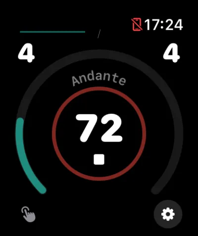
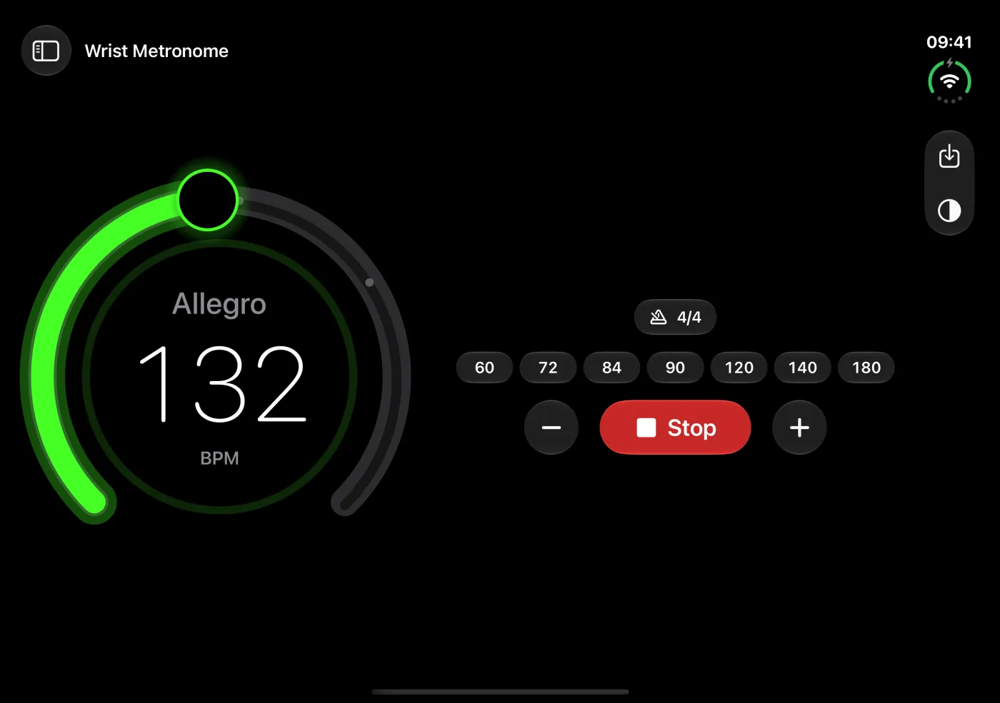
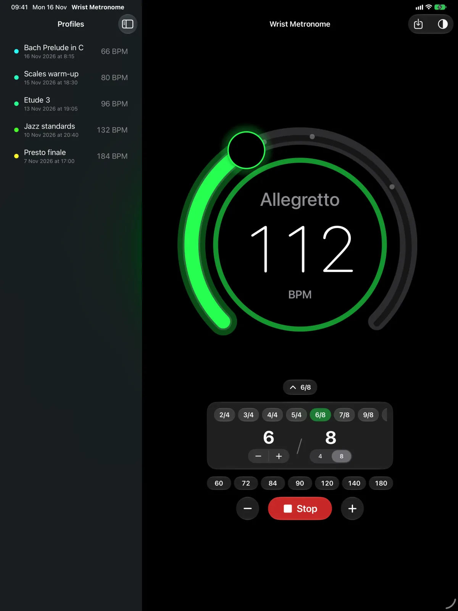
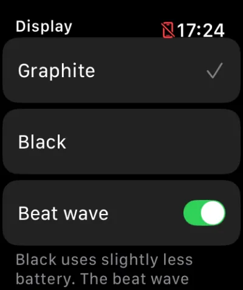
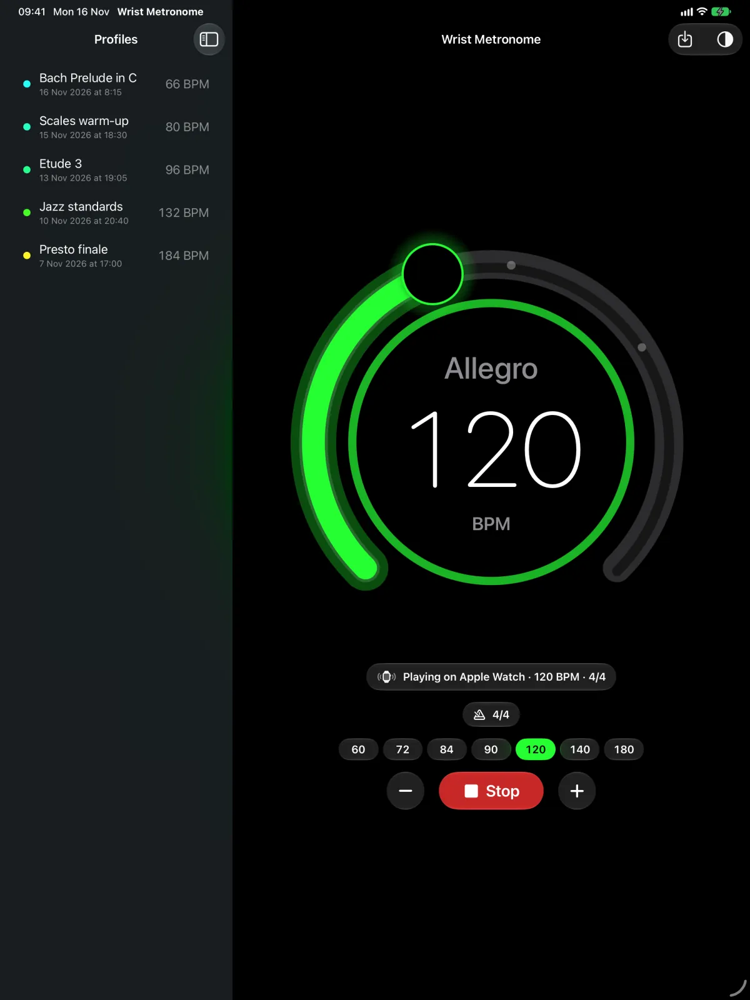
Keep time, your way
Set your tempo, press Play, and feel the beat.